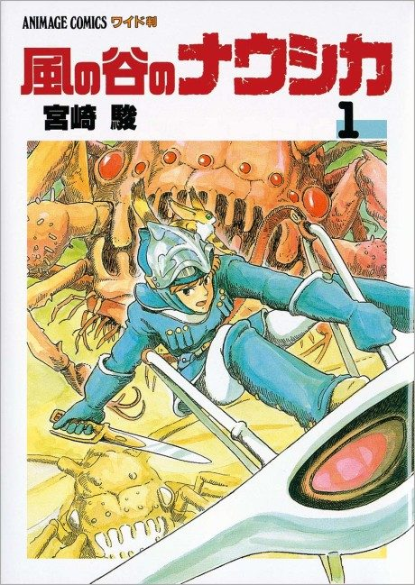

Anime
Anime
MangaNausicaä of the Valley of the Wind
風の谷のナウシカ
After the anime, read the manga from Volume 3.
8.1AniList
—Animeter
1 epMovie
Anime finished. Where does the manga pick up?
Start at Volume3
The film roughly covers the first two manga volumes with its own ending; continue at volume 3 (the manga differs, so reading from volume 1 is worthwhile).
127 end
Nausicaä of the Valley of the WindStart reading here